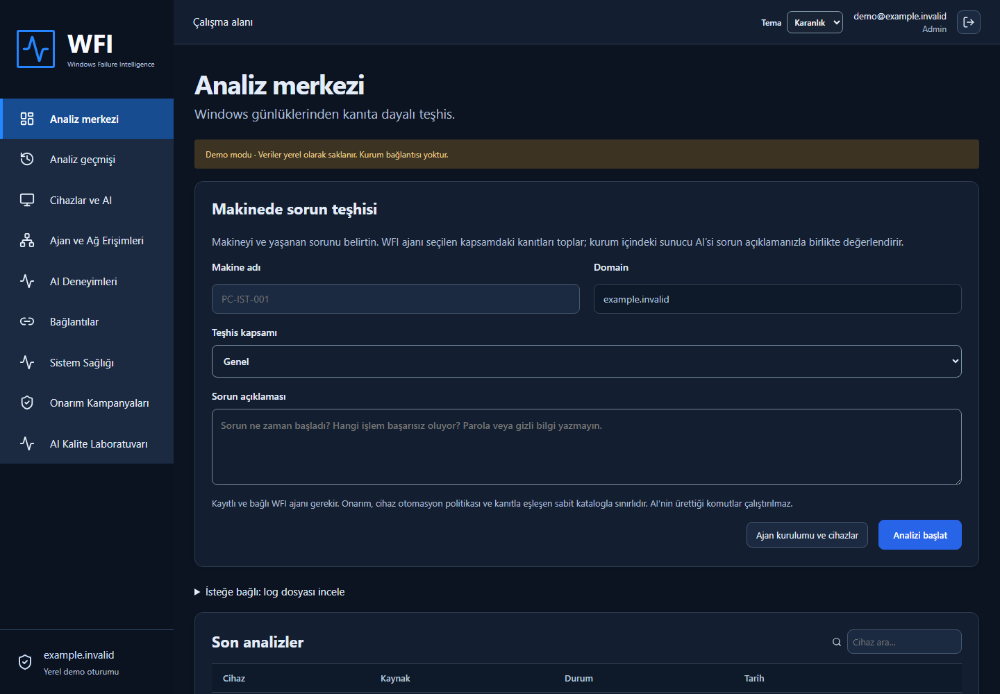
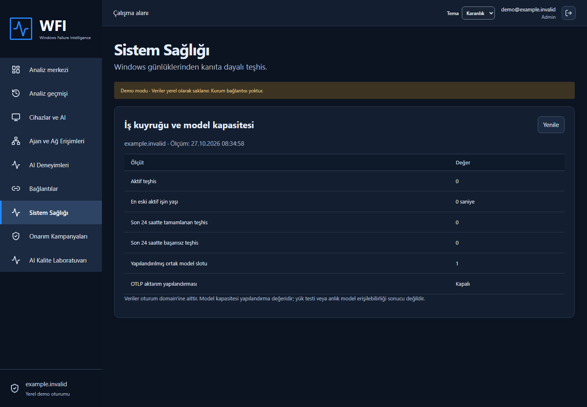
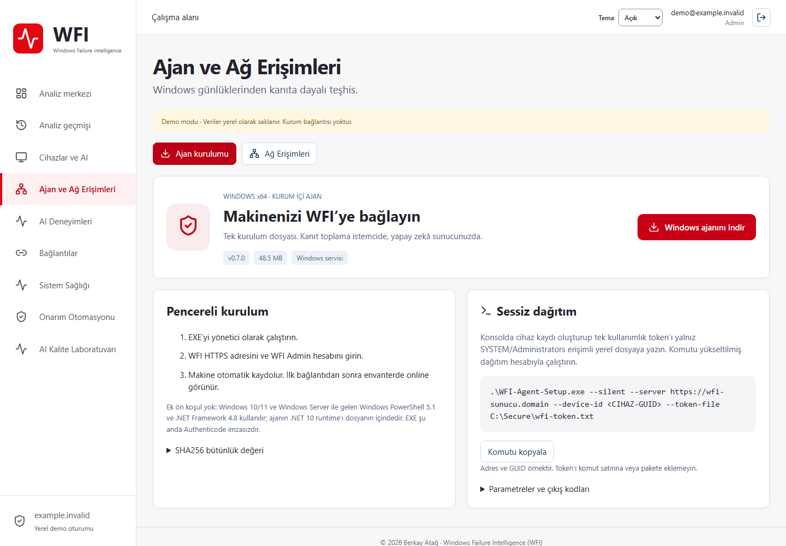
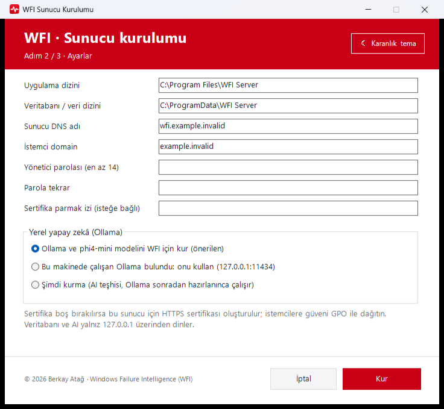
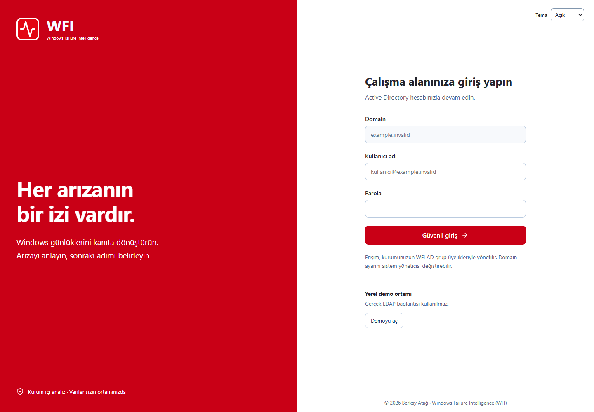
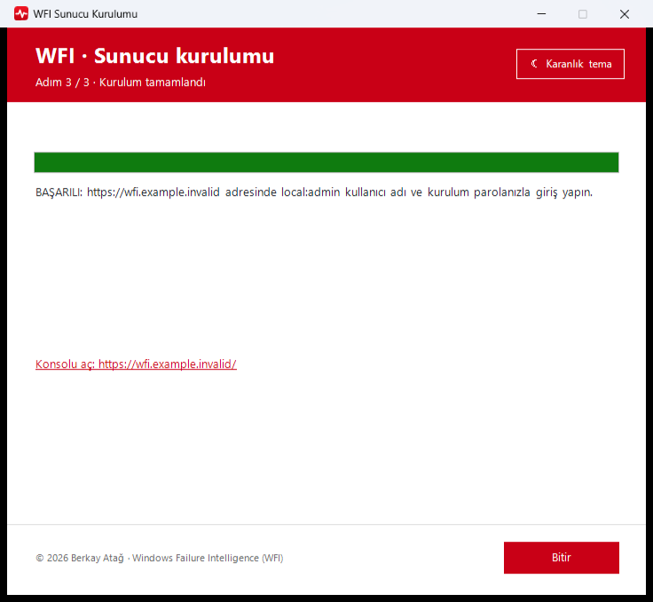

Makineden doğrudan teşhis
Windows olayları, servisler, BigFix ve SCCM bulguları ajan tarafından toplanır. Log dosyası yüklemek isteğe bağlıdır.
Sürüm 0.7.1 · Windows Server x64
Makineyi seçin, sorunu anlatın. WFI ajanı kanıtları toplar, sunucudaki yerel yapay zekâ bulguları değerlendirir; onarım onaylı işlem kataloğu ve cihaz politikalarıyla yürür.

Teşhisten doğrulamaya
Windows olayları, servisler, BigFix ve SCCM bulguları ajan tarafından toplanır. Log dosyası yüklemek isteğe bağlıdır.
Ollama sunucuda çalışır; veriler kurum dışına çıkmaz. Doğrulanmış geçmiş deneyimler bağlam sağlar, olumsuz geri bildirim tekrarı engeller.
Serbest AI komutu çalıştırılmaz. Sabit katalog, önkontrol ve doğrulama; Onarım Otomasyonu pilot grubu, bakım aralığı ve belirsiz sonuçta duraklatma sunar.
Kurulumda belirlenen local:admin ile hemen başlayın. LDAPS ve Viewer / Analyst / Admin grup eşlemesi sonradan etkinleştirilir.
Bekleyen teşhisler, model kapasitesi ve BigFix merkez doğrulaması tek ekranda. Her işlem domain kapsamlı denetim kaydı bırakır.
İstemci kurulumu konsoldan indirilir; Windows'un kendi PowerShell 5.1 ve .NET Framework'ü yeterlidir. Ajan için inbound port gerekmez.
Ekranlar
Sağ üstteki düğme bu sayfanın temasını değiştirir; ekran görüntüleri de seçtiğiniz temaya geçer.




Kurum içi mimari
Kanıt toplama
Onaylı işlemler
Kalıcı sonuç günlüğü
İş kuyruğu · Politika · Denetim
Yerel yönetici / LDAPS
Teşhis kanıtları
Kontrollü onay
PostgreSQL ve Ollama yalnız 127.0.0.1 üzerinde dinler. GitHub Pages yalnız bu tanıtım sayfasını sunar; şirket konsolu ve verileri GitHub'da çalışmaz.
İndirme ve kurulum

İlk kurulum internetten bileşen ve model indirir (birkaç GB). EXE Authenticode imzalı değildir; yayıncı adı Programlar ve Özellikler kaydıdır. Gerçek AD/HA ve büyük filo kabulü kurumunuzun pilot ortamında yapılmalıdır.